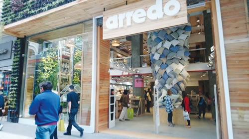

Real Chubut - Agencia de Noticias


Arredo aplica la receta solidaria para hacerle frente a la crisis

TIENE 70 LOCALES DISTRIBUIDOS EN ARGENTINA Y URUGUAY - La textil sostuvo sus ventas en base a promociones especiales para sectores vulnerables. Alienta la igualdad de género y financia actividades culturales.
El 2018 fue un año bisagra para la economía y las empresas argentinas. La fuerte devaluación, las altas tasas de interés y la caída estrepitosa de la demanda llevaron a muchas firmas una situación crítica. En este contexto, la empresa textil Arredo no quedó al margen de ese efecto, pero encontró un modelo propio para hacerle frente a la crisis.
"Haciendo un balance de lo que fue el año pasado, claramente puedo decir que estoy muy contento de la situación en la que quedó la marca. Por supuesto que fue un gran desafío y nos hizo barajar y dar de vuelta varias veces pero en definitiva logramos una optimización de recursos fenomenal que nos brindó un aprendizaje clave para nuestro futuro", detalla a Ámbito Financiero Agustín Sasson, director de producto y comunicación.
La compañía de capitales nacionales, que emplea en forma directa a más de 700 personas, no la tuvo fácil pero según detallan puertas adentro, la clave estuvo en mirar lo que necesitaba el mercado. Y por eso lanzaron la campaña "Entre Todos", con la que brindan descuentos y precios diferenciales a jubilados, docentes, familias con más de dos hijos y estudiantes, entre otros grupos más vulnerables a la realidad económica nacional.
"Analizamos el entorno y comprendimos que teníamos una responsabilidad muy grande ante un contexto tan complicado y ahí es donde queríamos aportar. No era lógico que determinada grupo pague lo mismo que otros con mejores ingresos. Quizás fuimos en contra a la lógica de mercado pero hoy podemos decir que no nos equivocamos porque el mercado nos respondió satisfactoriamente", cuenta Silvina Bergonzi, directora de organización, personas y sustentabilidad.
Según explicó, el objetivo de la firma es mucho más que vender sábanas, toallas y objetos de decoración. La idea es ofrecer "La experiencia Arredo" y aquí la marca lleva adelante y comunica una variedad de iniciativas orientadas a las políticas de responsabilidad social empresaria (RSE).
Desde un fuerte programa de igualdad de género que brinda acompañamiento a las mujeres de la compañía -más del 60% de su plantel de empleados es femenino- pasando por un programa de cultura que ofrece talleres literarios, bibliotecas rodantes y becas de estudio; hasta la instalación y mantenimiento de jardines verticales en la ciudad ó la instalación de un siestario en plena avenida Florida, entre otros.
"Como empresa queremos trascender, aportar algo a la sociedad y que eso llegue a nuestros compradores o a la gente que sigue la marca. Podemos hacer la diferencia con cada una de estas acciones y la empatía que generamos en los consumidores puede hacer que nos elijan porque también representamos lo que les gusta o les hace bien", cuenta Sasson.
Actualmente Arredo cuenta con una planta industrial en La Rioja, oficinas comerciales en CABA y Montevideo, más de 70 puntos de venta distribuidos en Argentina y Uruguay (alrededor de 40 son propios, el resto franquicias) y además tiene un sitio de ventas online que anualmente es visitado por poco más de 4,5 millones de personas.
Toda esta estructura se logró mantener a pesar del complicado contexto económico que planteó el 2018, pero no fue tarea sencilla y así lo explica Sassón: "Echamos mano a un sinfín de nuevos recursos, por ejemplo nos apoyamos en nuestro stock, también en la confección nacional que hoy llega a alrededor del 70%. Nuestras materias primas son prácticamente todas importadas y a pesar de la fuerte devaluación, trasladamos muy poco a los precios porque sabemos que el mercado tampoco lo puede soportar. Fue un año duro, de mucho trabajo, en el que tuvimos que replantear nuestros objetivos económicos varias veces pero no resignamos calidad y no perdimos el foco de lo que nos interesa brindar como marca", detalla Sasson muy orgulloso.
El crecimiento de las ventas a través del canal on line, se lleva un capítulo aparte en la historia de esta empresa familiar que ya cuenta con 40 años en la Argentina. En 2014 fue el lanzamiento oficial de la web y hoy está consolidada entre las líderes locales en ventas por internet. Ofrece envíos puerta a puerta o los productos también se pueden retirar en las sucursales de todo el país, una de sus fortalezas es la estrategia comercial que constantemente ofrece descuentos, promociones y beneficios para sumas más compras y esto también se refleja en los números de la compañía. Anualmente, en cantidad de compras, la página web iguala el número que alcanzan todas las tiendas físicas de la firma.
"Afortunadamente corremos con la ventaja de que nos manejamos en un rubro que tiene una larga trayectoria en la venta por catálogo, a su vez, con la gran cantidad de tiendas que contamos en la Argentina, sumado al reconocimiento de la marca, la llegada el público al canal on line se dio de una manera muy orgánica y en este contexto aprovechamos nuestras fortalezas pero a la par trabajamos constantemente para que los compradores tengan una experiencia satisfactoria con adecuados tiempos de entrega, por ejemplo", explica Bergonzi.
Fuente: Ambito